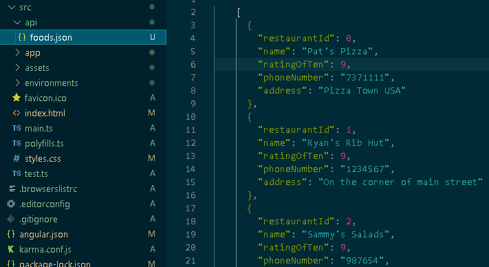
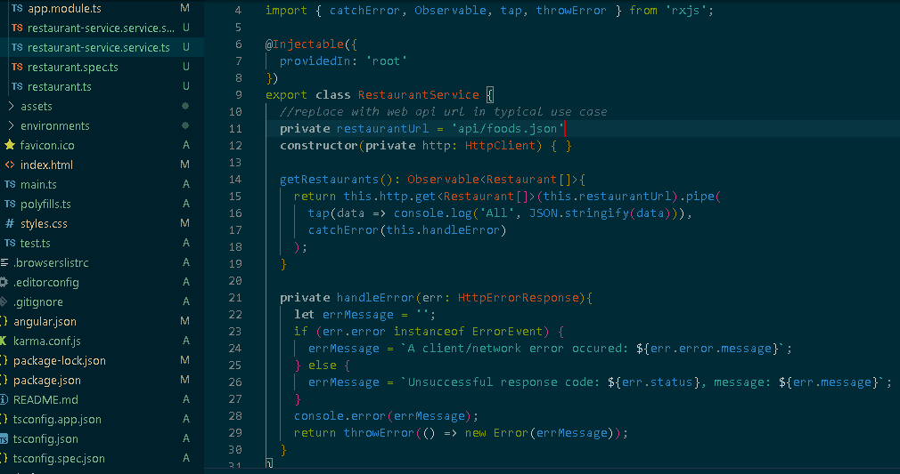
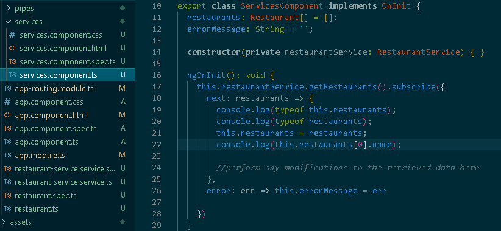
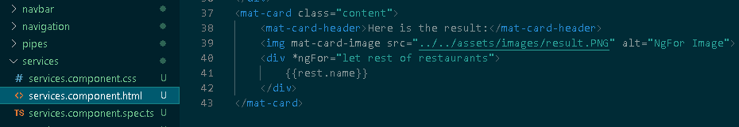

Functionality that is shared accross multiple components can be written into Angular services so that it doesn't need to be repeated.
The most common use for Angular services is to perform data access to some api by making use of the Angular HttpClient Module.
The following is an example of services and HttpClient in action, retrieving restaurant data from a local JSON file. In an actual application, the url used would be replaced with that of some api.
Data Source

For this example we use a local JSON file containing a list of restaurants
Service

The angular service uses HttpClient to retrieve the data from the JSON, returning an observable, a type that allows live updates on subscription.
Subscription

The component subscribes to the observable and assigns the value to a local variable to be displayed.
Here is the result:

{{rest.name}}